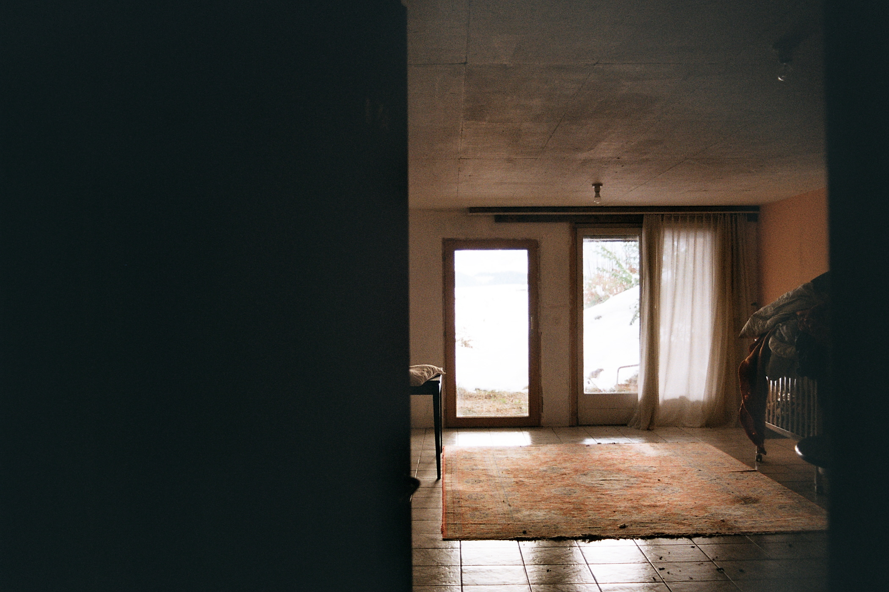

Einer, der nie anfängt, in die Tat zu schreiten, weil er schon im Vorhinein alles verwirft.
Er hat keine Vision.
Eine Onlineumfrage, in der er das Mass an Privilegiertheit überprüft, hat ergeben, dass er ziemlich privilegiert ist. Das ist keine Überraschung. Er ist weiss, männlich, in der Schweiz geboren und aufgewachsen. Seine Eltern, zumindest der Vater, sichern ihn finanziell ab. Bildung. Freunde. Therapiemöglichkeiten. Was ihn in der Statistik runterzieht, sind die Scheidung der Eltern und Depression. Die Krankheit der Privilegierten. Doch da er eben Zugang zu Therapiesitzungen hat, vermindert sich dieses Problem. Die Scheidung der Eltern verliert dadurch ebenfalls an Gewicht. Mit der fortschreitenden Persönlichkeitsentwicklung wird ihm bewusst, dass es keine «normale» Familie gibt, die ihm verwehrt blieb.
Er hat Mühe, sich zu entscheiden. Manchmal bei Entscheidungen, die wichtig sind, manchmal bei Dingen, die banal sind. Wie zum Beispiel bei der Frage, was er für das Mittagessen einkauft. Es kommt vor, dass die Entscheidungsschwierigkeit eine Grösse annimmt, aufgrund dessen er stundenlang liegenbleibt. Im Bett oder auf dem Teppich am Boden. Währendessen starrt er die Decke an und wiederholt ständig die Szenarien, welche die Entscheidungen mit sich ziehen würden. Ihm wird geraten, er solle eine Münze werfen. Das macht er nicht, weil er die Kontrolle über seine Entscheidung nicht gerne abgibt. Er überlässt die Dinge nicht gerne dem Zufall, und an Schicksal glaubt er nicht.
Er hat keine Zukunft. Dieses Problem teilt er mit seiner Generation. Gemeint ist, dass es keine Vorstellung von der Zukunft gibt. Das Leben ist ungewiss. Das war in der Vergangenheit nicht anders. Doch gab es vor 50 Jahren noch Optimismus und «echten» Fortschritt. Heute gibt es nichts mehr, was auf eine Zukunft deuten würde, die er sich wünscht. Besser ist es, die Zukunft mit allen Mitteln abzuwenden und in der «absoluten Gegenwart»1 zu bleiben.
Das kann zu Lähmung und zum Stillstand führen. Was wiederum zum Liegen auf dem Teppich und Starren an die Decke führen kann. Wenn er sich in seinem Kopf befindet, kommt er zu der Frage: Was bringts? Eine vernichtende Frage. Denn wirklich viel bringen tut nie irgendetwas. Alles hat eine Kehrseite. Bevor er überhaupt in die Tat schreitet, spielt er im Kopf schon alle Folgen der Tat durch. Letztendlich erklärt er jede Tat für unnütz. Am Ende fängt er nie an. Seine Utopie wird er nie kreieren können, denn diese erfordert Praxis.
Doch selbst eine Utopie stuft er als unnütz ein, weil sie für jemand anderes Dystopie bedeutet. Das Streben nach einer Welt, die perfekt ist für alle, ist eine Illusion. 2
Mit dem Fortschreiten seines Architekturstudiums hat er zunehmend aus den Augen verloren, was Architektur ist. Es kommt ihm vor, als hätte er in den Jahren nicht Wissen gesammelt, sondern immer mehr vergessen. Seine Familie fragt ihn, was er an dem Haus in Wangelen ändern würde. Es kommt ihm nichts in den Sinn. Nach längerem Überlegen muss er zugeben:
«Ich weiss nicht, was ich damit machen würde. Nichts.»
Das Haus in Wangelen scheint im Sterben zu liegen. Und so fühlt sich auch der Teil in ihm an, der sich Architekt nennt. Die Konstruktion zerfällt mit der Zeit, weil er sich nicht mehr um sie kümmert.
Nach der Lehre als Bauzeichner hätte er gewusst, wie er ein Haus baut. Er zeichnete Details, reihte Bauteile aneinander und verhinderte Wärmebrücken. Die Dämmperimeter waren lückenlos. Er wusste, wie er die Statik berechnet und wie er genügend Platz für alle Leitungen im Haus lässt. Er kannte die Bauphasen. Konzept, Baueingabe, Ausführung. Skizze, Plan, Modell, Rohbau, Ausbau. Die Kunst des Häuserbauens stand ihm offen. Er wusste die Lösungen für die Probleme, welche ein Haus ihm stellte.
Mit jedem Semester seines Architekturstudiums schritt die architektonische Amnesie voran. Immer grösser wurde die Distanz zwischen ihm und der Kunst des Häuserbauens. Die Techniken der Lehre verlernte er. Er suchte sich Lehrer:innen, die von ihm wollten, dass er diese vergisst. Um Platz zu machen, für neue Erkenntnisse. Und vergessen, das tat er. Bis heute. Alles, was er noch konstruiert, sind Worte und Gedanken, mit denen noch lange keine Architektur entsteht. Und deshalb kann er auf die Frage, was er am Haus in Wangelen machen würde, lediglich antworten: «Ich weiss es nicht. Vielleicht wusste ich es noch nie.»
Die Motivation hinter seinen Bestrebungen findet er im Aussen. Es ist das Ansehen von Anderen. Er braucht Bewunderung für seine Arbeit. So wie er andere bewundert, für deren Arbeit. Dabei ist er streng mit sich selber. Den Massstab, den er für die anderen setzt, nimmt er auch als Bewertung für sich selber. Eigentlich akzeptiert er ausschliesslich Perfektion, doch er scheut den Prozess. Was ihn daran hindert, in die Nähe von Perfektion zu kommen. Dass diese zu erreichen unmöglich ist, das weiss er. Es ist Teil seines inneren Konflikts. Er sehnt sich danach, die Position in dem Leben der anderen Menschen zu wissen. Doch die ersehnte Sicherheit ist ebenso eine Illusion wie die Vorstellung, zur Perfektion im Handeln zu gelangen. Es scheint, als verunklärt sich seine Position in seinem Umfeld zunehmend, je mehr er sie probiert zu finden.
Er hat eine Erinnerung aus seiner Kindheit:
Es gab die älteren Kinder. In seinen Augen waren sie Jugendliche oder schon Erwachsene. Mit ihnen versuchte er sich gross zu fühlen. Indem er ihnen nicht auf die Nerven ging, bewies er sich, dass er als Teil der Gruppe verstanden würde. Nur wer die älteren Kinder nicht stört, wird von ihnen mit einbezogen in ihre Spiele.
Einmal spielten sie Mutproben. Es lag Schnee auf der Terrasse. Und die Frage war, wer länger barfuss im Schnee rumrennen kann. Sie versammelten sich alle an dem Ausgang zur Terrasse im Westen über der Halle. Es war dunkel und es lag viel Schnee über der Halle. Sie zogen also alle ihre Schuhe aus. Der grosse Bruder ging zuerst. Ein Riesenspektakel. Alle zählten die Zeit. Nach seinem grossen Bruder waren die Freunde an der Reihe. Die Intensität des Momentes nimmt in seiner Erinnerung ab. Ehe er barfuss losrannte, war das Interesse der Gruppe nicht mehr vorhanden. Es passierte nichts Aussergewöhnliches. Nur ein Spiel von Kindern. Wieso bleibt solch eine Erinnerung? Ob es eine tiefgründige Erklärung gibt, oder ob es Zufall ist, weiss er nicht.
Die Erinnerung zeigt ihm ein Verhalten, das er gut kennt. Aktiv anderen nicht auf die Nerven gehen. Das ist etwas, was er bis zum Alter, in dem er sich heute befindet, perfektioniert hat. Er möchte gemocht werden, vor allem – oder nur – von Menschen, zu denen er hochschaut. Wie zu den älteren Kindern und dem grossen Bruder in der Erinnerung. Es geht nicht nur um das Alter, sondern vor allem um das Ansehen, welches um eine Person herrscht. Daraus hat sich eine Persönlichkeit entwickelt, die manchmal in eine Persönlichkeitsstörung kippt und Probleme für ihn verursacht. Sich so zu biegen, dass ihn Menschen mögen, zu denen er hochschaut, ist manipulativ. Dabei belügt er zugleich die Mitmenschen und sich selber.
Sein Klassenlehrer nannte ihn bei einem Elternabend vor ihm und seiner Mutter sozial geschmeidig. Er war um die 15 Jahre alt. Seine Mutter fand das grossartig. Er teilte die Freude. Heute beginnt er erst zu verstehen, was die Bemerkung vom Klassenlehrer bedeutet. Was sich damals als Kompliment anhörte, fühlt sich heute nicht mehr gleich an. Was der Klassenlehrer ansprach, ist eine Strategie, sich mit den sozialen Fähigkeiten aus Problemsituationen zu retten. Sozial geschmeidig zu sein, bedeutet auch, seine Bedürfnisse zu ignorieren. Es geht so weit, dass er seine Bedürfnisse nicht mehr erkennt. Bis es keine Antwort mehr gibt auf die Frage: Wer ist er? Das komplett zu beantworten, gelingt vermutlich niemandem. Die persönliche Wahrnehmung passt nicht zu der Beobachtung eines anderen. Zudem verändert der Mensch sich dauernd. Die Identität genau zu klären, wird also nie möglich sein.

Die Frage, wer er ist, taucht zur Zeit viel auf. Er wird im Zusammenhang mit seiner Thesisarbeit oft gefragt: «Wo bist du?» Gemeint ist seine Position in seiner Arbeit. Er beginnt sich zu fürchten, dass er keine Position hat. Ein Verdacht tut sich auf, dass es die «soziale Geschmeidigkeit» ist, die ihn bisher durch seinen Werdegang brachte. Und nicht eine Positionierung. Dass er die Fähigkeit beherrscht, seine Arbeit an die Personen anzupassen, welche die Aufgabe stellen. Sodass seine Arbeit dieser Person entspricht und nicht ihm selber. Oder die Fähigkeit, nicht auf die Nerven zu gehen. Wie als Kind, vor dem Ausgang der Terrasse zum Schnee. Was ihm Vorteil verschafft. Wie er gelernt hatte, werden Menschen, die nicht auf die Nerven gehen, in Gruppen mit einbezogen. Hinter seinem Tun ist eine Überlebensstrategie zu erkennen. Fordern ihn seine Betreuenden auf, in seiner Thesisarbeit Stellung zu beziehen, dann fühlt er sich verloren. Die Arbeit betrifft ihn und seine Familie. Es gibt keine Art, sie zu behandeln, die den bewertenden Fachpersonen entsprechen würde oder nicht. Alles, was er macht, muss aus der inneren Position heraus geschehen. Ein Moment der Krise am Ende seines Studiums. Ist er hier am richtigen Ort?
–––––
1 Marcus Quent, Absolute Gegenwart (2016).
2 Hannah Arendt, Die Freiheit, frei zu sein (2018). Nachwort von Thomas Meyer: «[...] [Hannah Arendt] liefert ein Plädoyer für aktive Wachsamkeit. Eine Wachsamkeit, die sich sowohl der Möglichkeiten als auch der Gefährdungen von Revolutionsverspechen und Freiheitsutopien bewusst ist.»